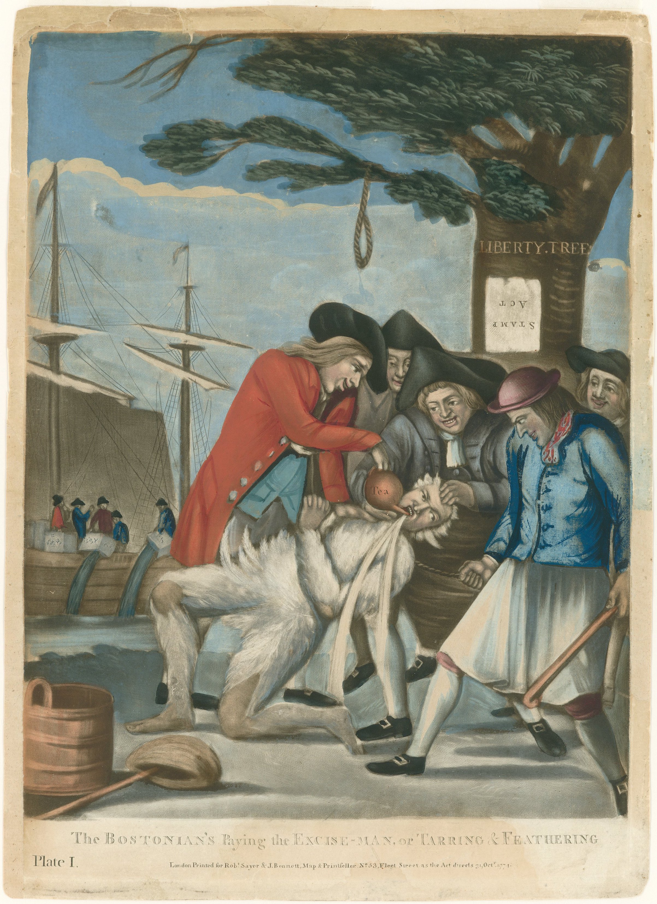
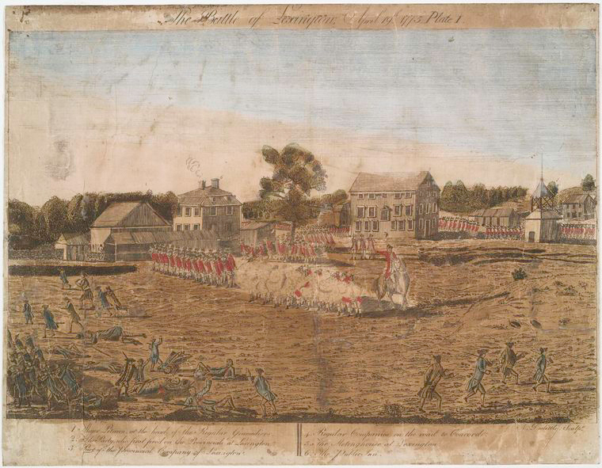

Directions: Work through the five stations in order. Every station is a record made by someone with a case to argue. For each record, state what its makers wanted the record to prove. At the end, complete the table and judge which single step between December 1773 and April 1775 did most to make reconciliation impossible. All five stations are verbatim documents with cuts marked by ellipses and disclosed in the Source lines.
Source: George R. T. Hewes, A Retrospect of the Boston Tea-Party, with a Memoir of George R. T. Hewes (New York, 1834), pages 37 to 41, as transcribed by the American Yawp Reader from the 1834 printing, held by the Internet Archive. Cuts are marked with ellipses. Read this station as what it is on its face: a recollection written and published in 1834, sixty years after the night it describes, by an elderly participant remembering his youth.
It was now evening, and I immediately dressed myself in the costume of an Indian, equipped with a small hatchet, which I and my associates denominated the tomahawk, with which, and a club, after having painted my face and hands with coal dust in the shop of a blacksmith, I repaired to Griffin's wharf, where the ships lay that contained the tea. ...
We then were ordered by our commander to open the hatches, and take out all the chests of tea and throw them overboard, and we immediately proceeded to execute his orders, first cutting and splitting the chests with our tomahawks, so as thoroughly to expose them to the effects of the water. In about three hours from the time we went on board, we had thus broken and thrown overboard every tea chest to be found in the ship ...
No disorder took place during that transaction, and it was observed at that time, that the stillest night ensued that Boston had enjoyed for many months.
Hewes insists twice on order: commanders obeyed, chests split so the tea could not be saved, and no disorder at all. What does he want this record to prove about the men who destroyed the tea?
This account was published in 1834, sixty years after December 1773. Name one detail in it that a long memory might sharpen or soften, and state how a reader should weigh the account for that reason.
Source: Parliament of Great Britain, the Boston Port Act, March 31, 1774, Avalon Project, Yale Law School. Cuts are marked with ellipses. The figure below is described in the caption from the audited TPSP record of the print.

An act to discontinue, in such manner, and for such time as are therein mentioned, the landing and discharging, lading or shipping, of goods, wares, and merchandise, at the town, and within the harbour, of Boston, in the province of Massachuset's Bay, in North America.
WHEREAS dangerous commotions and insurrections have been fomented and raised in the town of Boston ... in which commotions and insurrections certain valuable cargoes of teas, being the property of the East India Company, and on board certain vessels lying within the bay or harbour of Boston, were seized and destroyed ... be it enacted ... That from and after the first day of June, one thousand seven hundred and seventy-four, it shall not be lawful for any person or persons whatsoever to lade put, or cause or procure to be laden or put, off or from any quay, wharf, or other place, within the said town of Boston ... any goods, wares, or merchandise whatsoever ...
... nothing herein contained shall extend ... until it shall sufficiently appear to his Majesty that full satisfaction hath been made by or on behalf of the inhabitants of the said town of Boston to the united company of merchants of England trading to the East Indies, for the damage sustained by the said company by the destruction of their goods ...
The act names no individual offender and holds a whole town. What does the act want its own record to prove about Boston, and what single payment would end the closure?
Set the act beside the Dawe print above it. The act speaks of commotions and insurrections; the print shows mob rule for a London audience. How do the two records work together as Parliament's case?
Source: First Continental Congress, Declaration and Resolves, October 14, 1774, Avalon Project, Yale Law School. Cuts are marked with ellipses. N.C.D. in the original marks resolves carried with no contradiction recorded.
Resolved, N.C.D. 1. That they are entitled to life, liberty and property: and they have never ceded to any foreign power whatever, a right to dispose of either without their consent.
Resolved, 4. That the foundation of English liberty, and of all free government, is a right in the people to participate in their legislative council ... they are entitled to a free and exclusive power of legislation in their several provincial legislatures ... in all cases of taxation and internal polity ...
To these grievous acts and measures, Americans cannot submit ... we have for the present, only resolved to pursue the following peaceable measures: 1. To enter into a non-importation, non-consumption, and non-exportation agreement or association. ...
Resolved 1 grounds the whole case in consent. State the claim in your own words, and name the body the fourth resolve says alone may tax the colonies.
Congress calls its measures peaceable. What does Congress want this record to prove about the colonies in October 1774, six months before any shot was fired?
Source: Lt. John Barker, diary entry for April 19, 1775, as recorded in the audited TPSP record (Harvard University Press, 1924; punctuation modernized). Barker was a British officer on the march and wrote the entry the same day, for himself. Cuts are marked with ellipses.

... at 5 o'clock we arrived there, and saw a number of people, I believe between 200 and 300, formed in a common in the middle of the town; we still continued advancing, keeping prepared against an attack though without intending to attack them; but on our coming near them they fired one or two shots, upon which our men without any orders, rushed in upon them, fired and put them to flight; several of them were killed, we could not tell how many, because they were got behind walls and into the woods; We had a man of the 10th light Infantry wounded, nobody else hurt. We then formed on the Common, but with some difficulty, the men were so wild they could hear no orders; we waited a considerable time there, and at length proceeded on our way to Concord. ...
Barker says his men kept advancing without intending to attack. What does he want his diary to prove about who began the killing, and what does he admit about his own side in the same breath?
Barker counts the crowd at 200 to 300 people. The reading and the testimony put Parker's company far lower, and eight Americans died. What does Barker's count do for his account, and how should a reader handle it?
Source: Testimony of Nathaniel Mulliken, Philip Russell, and thirty two other Lexington militiamen, sworn April 25, 1775, as recorded in the audited TPSP record (A Narrative of the Excursion and Ravages of the King's Troops, 1775; spelling and punctuation lightly modernized). Massachusetts published the testimony in a pamphlet within days of the fighting. Cuts are marked with ellipses.
... we were alarmed and having met at the place of our company's parade (Lexington Green), were dismissed by our Captain, John Parker, for the present, with orders to be ready to attend at the beat of the drum. ... about five o'clock in the morning, hearing our drum beat, we proceeded towards the parade, and soon found that a large body of troops were marching towards us, some of our company were coming up to the parade, and others had reached it, at which time, the company began to disperse, whilst our backs were turned on the troops, we were fired on by them, and a number of our men were instantly killed and wounded, not a gun was fired by any person in our company on the regulars to our knowledge before they fired on us, and they continued firing until we had all made our escape. ...
The testimony stresses two facts: the company was dispersing, and no man in it fired first. What do the militiamen want this sworn record to prove, and to which audiences was the published pamphlet speaking?
The witnesses add the words to our knowledge to their denial. Why does that small qualification strengthen the testimony in law, and what does it leave open for a historian?
Complete the table. Use short entries drawn from the stations.
| Record | What its makers wanted it to prove | What the record also shows |
|---|---|---|
| Hewes (Station 1) | ||
| Port Act (Station 2) | ||
| Declaration and Resolves (Station 3) | ||
| Barker (Station 4) | ||
| The testimony (Station 5) |
Judge the steps. Which single step between December 1773 and April 1775 did most to make reconciliation impossible: the destruction of the tea, the Port Act and the acts that came with it, the colonies meeting and arming as one, or the shooting at Lexington? Write a short paragraph using evidence from at least two stations, and answer the strongest rival step.
What does he want the record to prove? That the destruction was disciplined public action, not crime. Hewes's men take orders from commanders, split every chest so no tea can be saved for use, finish all three ships in about three hours, steal nothing, and leave the stillest night Boston had enjoyed for months. A participant writing as an old man in the 1830s is defending the honor of the band he belonged to, and of the cause it served, against the charge that the Tea Party was a mob's vandalism. (Blueprint 3)
How should the sixty year gap be weighed? The memoir appeared in 1834, sixty years after the night, assembled from an elderly man's memory with a writer's help. Details that flatter the actors or round the story, the precise order of command, the perfect quiet afterward, may be sharpened by retelling and by the fame the event had gained. The core facts he gives, three ships, chests split and emptied in about three hours, disguises of paint and costume, agree with the contemporary record and with the Port Act's own statement that the tea was seized and destroyed. Weigh him as a genuine participant whose outline is corroborated and whose polish is memory's. (Blueprint 3)
What does the act want to prove, and what payment ends the closure? The preamble builds Parliament's case before the penalty lands: dangerous commotions and insurrections, fomented by ill affected persons, have subverted government and destroyed the East India Company's valuable cargoes, so the town as a town is punished. The operative clause makes trade itself unlawful at any Boston wharf from June 1, 1774, and the closing proviso sets the one price of reopening: full satisfaction paid to the East India Company for the destroyed goods, with satisfaction also made to the revenue officers who suffered in the riots. No trial of any individual is provided for, because the act's claim is that Boston collectively is the offender. (Blueprint 3)
How do act and print work together? The print, made at London for a British audience and published October 31, 1774, supplies the picture the act's words assume: Patriots as a violent crowd, tarring and feathering a customs man under the Liberty Tree while tea goes into the harbor behind them, two separate events squeezed into one scene of mob rule. Together the statute and the print form one argument in two media, that Boston is governed by a mob and must be coerced until it pays and submits. Students should note the compression in the print as a warning: the tarring happened in January 1774, the Tea Party in December 1773, and the print merges them to make disorder look constant. (Blueprint 3)
State the consent claim, and name the taxing body. The first resolve claims that the colonists are entitled to life, liberty, and property, and that they have never given any sovereign power the right to dispose of any of the three without their consent. The fourth resolve grounds free government in the people's participation in their legislative council, and holds that, since the colonists are not and cannot be represented in Parliament, their own provincial legislatures hold the exclusive power of legislation in all cases of taxation and internal polity. Parliament may regulate external commerce for the empire's sake; it may not tax. (Blueprint 3)
What does Congress want the record to prove? That in October 1774 the colonies were still seeking redress inside the empire, and seeking it together. Congress states rights as inherited English rights, lists the acts it holds unconstitutional, and answers with measures it is careful to call peaceable: a non-importation, non-consumption, and non-exportation association, an address to the British people, and a loyal address to the king. The record is built to prove both halves of the colonial position at once, that the quarrel was Parliament's making, and that twelve colonies now spoke with one voice, which is why the committees enforcing the Association became a government in fact while Congress claimed only to petition. (Blueprint 3)
What does he want to prove, and what does he admit? Barker wants the record to show that his column advanced prepared but without intending to attack, and that the colonists fired the first one or two shots. In the same sentences he admits what no pamphlet for his side would print: his men rushed in and fired without any orders, and afterward were so wild they could hear no orders while their officers tried to form them on the common. A private diary written the same day can hold both the claim and the admission, which is why historians value it and why students should read its blame and its confession separately. (Blueprint 4)
How should the count be handled? Barker gives 200 to 300 people formed on the common. Parker's company numbered far fewer effectives on the green, in the range of several dozen men in line, with others arriving, and eight Americans were killed. A large count serves Barker's account: a column fired on by hundreds reads as a battle, while fire returned on a small dispersing company reads as something else. The count may also be an honest dawn estimate of militia, spectators, and men still coming up. Either way, readers should set it against the testimony's picture of a company dispersing and against the casualty record, and treat his number as his estimate, not as a muster. (Blueprint 4)
What do they want to prove, and to whom? That the regulars fired first, on men who were obeying an order to disperse, and that the company committed no act of war before it was fired on. The testimony was sworn before justices of the peace on April 25, 1775, six days after the fighting, and Massachusetts published it at once in a pamphlet. Its audiences were the other colonies, whose militia and money Massachusetts needed, and readers in Britain, where the question of who fired first would decide whether April 19 was rebellion or massacre. The sworn form, thirty four named men of lawful age, is chosen to outrank rumor and to meet Barker's side's official reports on legal ground. (Blueprint 4)
Why does the qualification strengthen it? To our knowledge limits each man's oath to what he himself can swear to, which is the form a court requires; a witness who swears absolutely to what thirty four men did not do invites disbelief. In law the qualification makes the testimony more credible, not less. For a historian it leaves open the possibility that a shot came from somewhere outside the company's line, a bystander, a rider, a man behind a wall, which neither record can rule out. The two records agree on the volley and the dead. They disagree, irreconcilably, on the first shot. (Blueprint 4)
Table, expected entries. Hewes: he wants the record to prove the Tea Party was disciplined and purposeful; it also shows a participant writing sixty years on, defending the band's honor. Port Act: Parliament wants the record to prove Boston collectively guilty and coercion lawful until the tea is paid for; it also shows a whole town punished without trial, which united the colonies against it. Declaration and Resolves: Congress wants the record to prove the colonies held inherited rights and were pursuing peaceable redress together; it also shows a boycott machinery that governed the colonies in fact. Barker: he wants the record to prove the colonists fired first on an advancing column; it also shows his men firing without orders and beyond control. The testimony: the militiamen want the record to prove the regulars fired first on a dispersing company; it also shows a publication campaign fought in the same week as the battle. Verdict paragraphs earn full credit for any of the four steps argued from the stations. The Tea Party answer holds that destroyed property gave Parliament its case and its price. The Port Act answer holds that collective punishment without trial converted a Boston crime into a continental cause, the step Congress's own resolves answer. The united answer holds that the Association and the arming made resistance a rival government that London could not leave standing. The Lexington answer holds that blood, and two irreconcilable records of it, ended negotiation in fact. Strong answers concede the rival step's force first, most often the Port Act against Lexington, and then show why their step closed the door the rival step had only pushed.